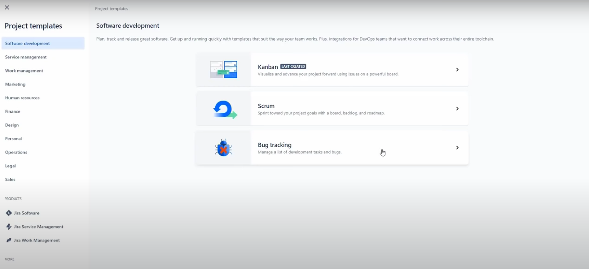
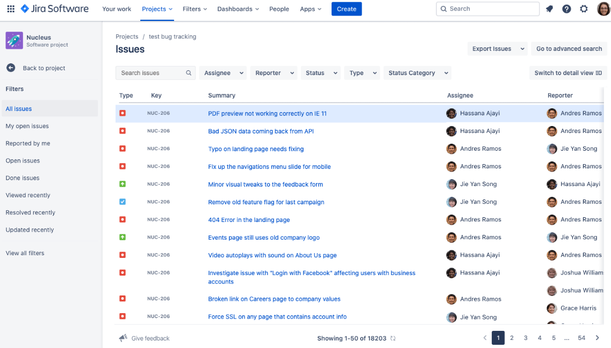
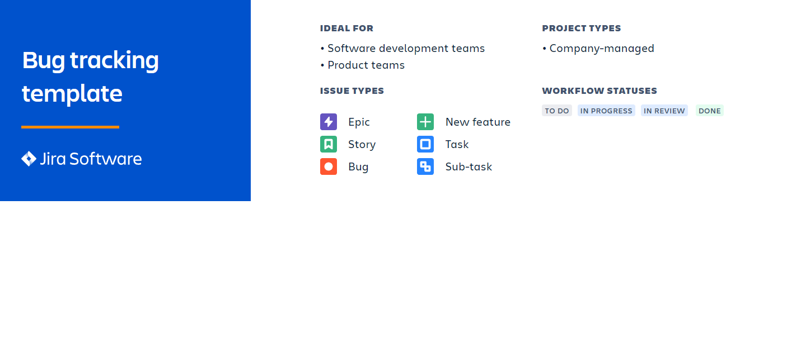

Use of JIRA
- JIRA is used in Bugs, Issues and Change Request Tracking.
- JIRA can be used in Helpdesk, Support and Customer Services to create tickets and
track the resolution and status of the created tickets.
- JIRA is useful in Project Management, Task Tracking and Requirement Management.
- JIRA is very useful in Workflow and Process management.
JIRA ─ Core Features
Business Project Template
JIRA – Project
- Software Development Project
- Marketing Project
- Migration to other platform project
- Help Desk Tracking Project
- Leave Request Management System
- Employee Performance System
- Website Enhancement
The following screenshot displays the type of projects available in JIRA

Bug tracking template

